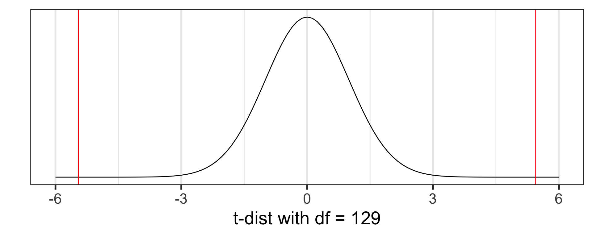
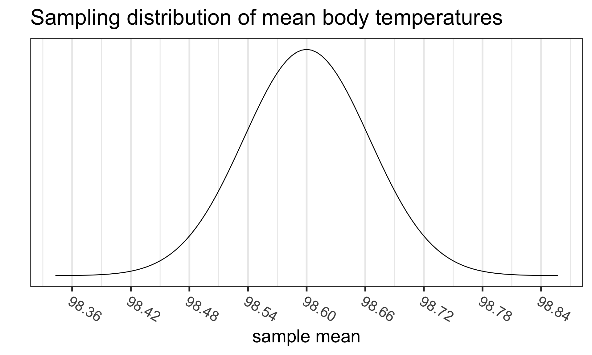

Day 10 Part 1: Hypothesis testing for mean from one-sample (Sections 4.3, 5.1)
Week 6
Where are we?

Where are we? Continuous outcome zoomed in

Goals for today: Part 1
(4.3, 5.1) Hypothesis testing for mean from one sample
- Introduce hypothesis testing using the case of analyzing a mean from one sample (group)
- Steps of a hypothesis test:
- level of significance
- null ( \(H_0\) ) and alternative ( \(H_A\) ) hypotheses
- test statistic
- p-value
- conclusion
- Run a hypothesis test in R
- Load a dataset - need to specify location of dataset
- R projects
- Run a t-test in R
tidy()the test output usingbroompackage
(4.3.3) Confidence intervals (CIs) vs. hypothesis tests
Goals for today: Part 2 - Class discussion
(5.2) Inference for mean difference from dependent/paired 2 samples
- Inference: CIs and hypothesis testing
- Exploratory data analysis (EDA) to visualize data
- Run paired t-test in R
One-sided CIs
Class discussion
- Inference for the mean difference from dependent/paired data is a special case of the inference for the mean from just one sample, that was already covered.
- Thus this part will be used for class discussion to practice CIs and hypothesis testing for one mean and apply it in this new setting.
- In class I will briefly introduce this topic, explain how it is similar and different from what we already covered, and let you work through the slides and code.
MoRitz’s tip of the day: use R projects to organize analyses

MoRitz loves using R projects to
- organize analyses and
- make it easier to load data files
- and also save output
Other bonuses include
- making to it easier to collaborate with others,
- including yourself when accessing files from different computers.
We will discuss how to use projects later in today’s slides when loading a dataset.
See file Projects in RStudio for more information.
Is 98.6°F really the mean “healthy” body temperature?
- Where did the 98.6°F value come from?
- German physician Carl Reinhold August Wunderlich determined 98.6°F (or 37°C) based on temperatures from 25,000 patients in Leipzig in 1851.
- 1992 JAMA article by Mackowiak, Wasserman, & Levine
- They claim that 98.2°F (36.8°C) is a more accurate average body temp
- Sample: n = 148 healthy men and women aged 18 - 40 years
- In January 2020, a group from Stanford published Decreasing human body temperature in the United States since the Industrial Revolution in eLIFE.
- “determined that mean body temperature in men and women, after adjusting for age, height, weight and, in some models date and time of day, has decreased monotonically by 0.03°C (0.05°F) per birth decade”
- September 2023 update: Defining Usual Oral Temperature Ranges in Outpatients Using an Unsupervised Learning Algorithm in JAMA Internal Medicine
- Average is 36.64 °C (97.95 °F); “range of mean temperatures for the coolest to the warmest individuals was 36.24 °C to 36.89 °C” (97.23 to 98.40 °F); based 2008-2017 data
- “findings suggest that age, sex, height, weight, and time of day are factors that contribute to variations in individualized normal temperature ranges.”
- NYT article The Average Human Body Temperature Is Not 98.6 Degrees, Oct 12, 2023, by Dana G. Smith
Question: based on the 1992 JAMA data, is there evidence to support that the population mean body temperature is different from 98.6°F?
Question: based on the 1992 JAMA data, is there evidence to support that the population mean body temperature is different from 98.6°F?
Two approaches to answer this question:
- Create a confidence interval (CI) for the population mean \(\mu\) and determine whether 98.6°F is inside the CI or not.
- is 98.6°F a plausible value?
- Run a hypothesis test to see if there is evidence that the population mean \(\mu\) is significantly different from 98.6°F or not.
This does not give us a range of plausible values for the population mean \(\mu\).
Instead, we calculate a test statistic and p-value
- to see how likely we are to observe the sample mean \(\bar{x}\)
- or a more extreme sample mean
- assuming that the population mean \(\mu\) is 98.6°F.
Approach 1: Create a 95% C I for the population mean body temperature
- Use data based on the results from the 1992 JAMA study
- The original dataset used in the JAMA article is not available
- However, Allen Shoemaker from Calvin College created a dataset with the same summary statistics as in the JAMA article, which we will use:
\[\bar{x} = 98.25,~s=0.733,~n=130\] CI for \(\mu\):
\[\begin{align} \bar{x} &\pm t^*\cdot\frac{s}{\sqrt{n}}\\ 98.25 &\pm 1.979\cdot\frac{0.733}{\sqrt{130}}\\ 98.25 &\pm 0.127\\ (98.123&, 98.377) \end{align}\]
Used \(t^*\) = qt(.975, df=129)
Conclusion:
We are 95% confident that the (population) mean body temperature is between 98.123°F and 98.377°F.
- How does the CI compare to 98.6°F?
Approach 2: Hypothesis Test
From before:
- Run a hypothesis test to see if there is evidence that the population mean \(\mu\) is significantly different from 98.6°F or not.
This does not give us a range of plausible values for the population mean \(\mu\).
Instead, we calculate a test statistic and p-value
- to see how likely we are to observe the sample mean \(\bar{x}\)
- or a more extreme sample mean
- assuming that the population mean \(\mu\) is 98.6°F.
How do we calculate a test statistic and p-value?
Recall the sampling distribution of the mean
From the Central Limit Theorem (CLT), we know that
- For “large” sample sizes ( \(n\geq 30\) ),
- the sampling distribution of the sample mean
- can be approximated by a normal distribution,with
- mean equal to the population mean value \(\mu\), and
- standard deviation \(\frac{\sigma}{\sqrt{n}}\)
\[\bar{X}\sim N\Big(\mu_{\bar{X}} = \mu, \sigma_{\bar{X}}= \frac{\sigma}{\sqrt{n}}\Big)\]
- For small sample sizes, if the population is known to be normally distributed, then
- the same result holds
Case 1: suppose we know the population sd \(\sigma\)
- How likely we are to observe the sample mean \(\bar{x}\) ,
- or a more extreme sample mean,
- assuming that the population mean \(\mu\) is 98.6°F?
- Use \(\bar{x} = 98.25\), \(\sigma=0.733\), and \(n=130\)
Case 2: we don’t know the population sd \(\sigma\)
- This is usually the case in real life
- We estimate \(\sigma\) with the sample standard deviation \(s\)
- From last time, we know that in this case we need to use the t-distribution with d.f. = n-1, instead of the normal distribution
- Question: How likely we are to observe the sample mean \(\bar{x}\) or a more extreme sample mean, assuming that the population mean \(\mu\) is 98.6°F?
- Use \(\bar{x} = 98.25\), \(s=0.733\), and \(n=130\)
Steps in a Hypothesis Test
Set the level of significance \(\alpha\)
Specify the null ( \(H_0\) ) and alternative ( \(H_A\) ) hypotheses
- In symbols
- In words
- Alternative: one- or two-sided?
Calculate the test statistic.
Calculate the p-value based on the observed test statistic and its sampling distribution
Write a conclusion to the hypothesis test
- Do we reject or fail to reject \(H_0\)?
- Write a conclusion in the context of the problem
Step 2: Null & Alternative Hypotheses (1/2)
In statistics, a hypothesis is a statement about the value of an unknown population parameter.
A hypothesis test consists of a test between two competing hypotheses:
- a null hypothesis \(H_0\) (pronounced “H-naught”) vs.
- an alternative hypothesis \(H_A\) (also denoted \(H_1\))
Example of hypotheses in words:
\[\begin{aligned} H_0 &: \text{The population mean body temperature is 98.6°F}\\ \text{vs. } H_A &: \text{The population mean body temperature is not 98.6°F} \end{aligned}\]- \(H_0\) is a claim that there is “no effect” or “no difference of interest.”
- \(H_A\) is the claim a researcher wants to establish or find evidence to support. It is viewed as a “challenger” hypothesis to the null hypothesis \(H_0\)
Step 2: Null & Alternative Hypotheses (2/2)
Notation for hypotheses:
\[\begin{aligned} H_0 &: \mu = \mu_0\\ \text{vs. } H_A&: \mu \neq, <, \textrm{or}, > \mu_0 \end{aligned}\]We call \(\mu_0\) the null value
\(H_A: \mu \neq \mu_0\)
- not choosing a priori whether we believe the population mean is greater or less than the null value \(\mu_0\)
\(H_A: \mu < \mu_0\)
- believe the population mean is less than the null value \(\mu_0\)
\(H_A: \mu > \mu_0\)
- believe the population mean is greater than the null value \(\mu_0\)
- \(H_A: \mu \neq \mu_0\) is the most common option, since it’s the most conservative
Example:
\[\begin{aligned} H_0 &: \mu = 98.6\\ \text{vs. } H_A&: \mu \neq 98.6 \end{aligned}\]Step 3: Test statistic (& its distribution)
Case 1: know population sd \(\sigma\)
\[ \text{test statistic} = z_{\bar{x}} = \frac{\bar{x} - \mu_0}{\frac{\sigma}{\sqrt{n}}} \]
- Statistical theory tells us that \(z_{\bar{x}}\) follows a Standard Normal distribution \(N(0,1)\)
Case 2: don’t know population sd \(\sigma\)
\[ \text{test statistic} = t_{\bar{x}} = \frac{\bar{x} - \mu_0}{\frac{s}{\sqrt{n}}} \]
- Statistical theory tells us that \(t_{\bar{x}}\) follows a Student’s t distribution with degrees of freedom (df) = \(n-1\)
\(\bar{x}\) = sample mean, \(\mu_0\) = hypothesized population mean from \(H_0\),
\(\sigma\) = population standard deviation, \(s\) = sample standard deviation,
\(n\) = sample size
Assumptions: same as CLT
- Independent observations: the observations were collected independently.
- Approximately normal sample or big n: the distribution of the sample should be approximately normal, or the sample size should be at least 30.
Step 3: Test statistic calculation
Recall that \(\bar{x} = 98.25\), \(s=0.733\), and \(n=130.\)
The test statistic is:
\[t_{\bar{x}} = \frac{\bar{x} - \mu_0}{\frac{s}{\sqrt{n}}} = \frac{98.25 - 98.6}{\frac{0.73}{\sqrt{130}}} = -5.45\]
- Statistical theory tells us that \(t_{\bar{x}}\) follows a Student’s t-distribution with \(d.f. = n-1 = 129\).

Assumptions met?
Step 4: p-value
The p-value is the probability of obtaining a test statistic just as extreme or more extreme than the observed test statistic assuming the null hypothesis \(H_0\) is true.
- The \(p\)-value is a quantification of “surprise”
- Assuming \(H_0\) is true, how surprised are we with the observed results?
- Ex: assuming that the true mean body temperature is 98.6°F, how surprised are we to get a sample mean of 98.25°F (or more extreme)?
- If the \(p\)-value is “small,” it means there’s a small probability that we would get the observed statistic (or more extreme) when \(H_0\) is true.

Step 4: p-value calculation
Calculate the p-value using the Student’s t-distribution with \(d.f. = n-1 = 129\):
\[p-value=P(T \leq -5.45) + P(T \geq 5.45) = 2.410889 \times 10^{-07}\]
# use pt() instead of pnorm()
# need to specify df
2*pt(-5.4548, df = 130-1, lower.tail = TRUE)[1] 2.410889e-07
Step 4: p-value estimation using \(t\)-table
- \(t\)-table only gives us bounds on the p-value
- Recall from using the \(t\)-table for CIs, that the table gives us the cutoff values for varying tail probabilities (1-tail & 2-tail)
- Find the row with the appropriate degrees of freedom
- Use next smallest df in table if actual df not shown
- I.e., for df = 129, use df = 100 in table
- Figure out where the test statistic’s absolute value is in relation to the values in the columns, i.e. between which columns is the test statistic?
- The header rows for those columns gives the lower & upper bounds for the p-value
- Choosing one-tail vs. two-tail test, depends on the alternative hypothesis \(H_A\).
- For a 2-sided test ( \(H_A: \mu \neq \mu_0\) ), use two-tails
- For a 1-sided test ( \(H_A: \mu < \textrm{or} > \mu_0\) ), use one-tail
Using a \(t\)-table to estimate p-value


Step 1: Significance Level \(\alpha\)
- Before doing a hypothesis test, we set a cut-off for how small the \(p\)-value should be in order to reject \(H_0\).
- We call this the significance level, denoted by the Greek symbol alpha ( \(\alpha\) )
- Typical \(\alpha\) values are
- 0.05 - most common by far!!
- 0.01 and 0.1
- Decision rule:
- When \(p\)-value < \(\alpha\), we “reject the null hypothesis \(H_0\).”
- When \(p\)-value \(\geq \alpha\), we “fail to reject the null hypothesis \(H_0\).”
Important
- “Failing to reject” \(H_0\) is NOT the same as “accepting” \(H_0\)!
- By failing to reject \(H_0\) we are just saying that we don’t have sufficient evidence to support the alternative \(H_A\).
- This does not imply that \(H_0\) is true!!
Step 5: Conclusion to hypothesis test
\[\begin{aligned} H_0 &: \mu = 98.6\\ \text{vs. } H_A&: \mu \neq 98.6 \end{aligned}\]- Recall the \(p\)-value = \(2.410889 \times 10^{-07}\)
- Use \(\alpha\) = 0.05.
- Do we reject or fail to reject \(H_0\)?
Conclusion statement:
- Basic: (“stats class” conclusion)
- There is sufficient evidence that the (population) mean body temperature is discernibly different from 98.6°F ( \(p\)-value < 0.001).
- Better: (“manuscript style” conclusion)
- The average body temperature in the sample was 98.25°F (95% CI 98.12, 98.38°F), which is discernibly different from 98.6°F ( \(p\)-value < 0.001).
Confidence Intervals vs. Hypothesis Testing
- See also V&H Section 4.3.3
Running a t-test in R
- Working directory
- Load a dataset - need to specify location of dataset
- R projects
- Run a t-test in R
tidy()the test output usingbroompackage
Working directory
- In order to load a dataset from a file, you need to tell R where the dataset is located
- To do this you also need to know the location from which R is working, i.e. your working directory
- You can figure out your working directory by running the
getwd()function.
getwd()[1] "/Users/wakim/Library/CloudStorage/OneDrive-OregonHealth&ScienceUniversity/Teaching/Classes/F24_EPI_525/F24_EPI_525_site"- Above is the working directory of this slides file
- In this case, this is NOT the location of the actual qmd file though!
- To make it easier to juggle the working directory, the location of your qmd file, and the location of the data,
- I highly recommend using R Projects!
R projects
- I highly, highly, HIGHLY recommend using R Projects to organize your analyses and make it easier to load data files and also save output.
- When you create an R Project on your computer, the Project is associated with the folder (directory) you created it in.
- This folder becomes the “root” of your working directory, and RStudio’s point of reference from where to load files from and to.
- I create separate Projects for every analysis project and every class I teach.
- You can run multiple sessions of RStudio by opening different Projects, and the environments (or working directory) of each are working independently of each other.
Note
- Although we are using Quarto files,
- I will show how to set up and use a “regular” R Project
- instead of “Quarto Project”
- Quarto Projects include extra features and thus complexity. Once you are used to how regular R Projects work, you can try out a Quarto Project.
How to create an R Project
- Demonstration in class recording
- Posit’s (RStudio’s) directions for creating Projects
- See file Projects in RStudio for more information on R Projects.
Load the dataset
- The data are in a csv file called
BodyTemperatures.csv - You need to tell R where the dataset is located!
- I recommend saving all datasets in a folder called data.
- The code I will be providing you will be set up this way.
- To make it easier to specify where the dataset is located, I recommend using the
here()function from theherepackage:here::here().
# read_csv() is a function from the readr package that is a part of the tidyverse
library(here) # first install this packagehere() starts at /Users/wakim/Library/CloudStorage/OneDrive-OregonHealth&ScienceUniversity/Teaching/Classes/F24_EPI_525/F24_EPI_525_siteBodyTemps <- read_csv(here::here("data", "BodyTemperatures.csv"))Rows: 130 Columns: 3── Column specification ────────────────────────────────────────────────────────
Delimiter: ","
dbl (3): Temperature, Gender, HeartRate
ℹ Use `spec()` to retrieve the full column specification for this data.
ℹ Specify the column types or set `show_col_types = FALSE` to quiet this message.# location: look in "data" folder
# for the file "BodyTemperatures.csv"
glimpse(BodyTemps)Rows: 130
Columns: 3
$ Temperature <dbl> 96.3, 96.7, 96.9, 97.0, 97.1, 97.1, 97.1, 97.2, 97.3, 97.4…
$ Gender <dbl> 1, 1, 1, 1, 1, 1, 1, 1, 1, 1, 1, 1, 1, 1, 1, 1, 1, 1, 1, 1…
$ HeartRate <dbl> 70, 71, 74, 80, 73, 75, 82, 64, 69, 70, 68, 72, 78, 70, 75…here::here()
General use of here::here()
here::here("folder_name", "filename")
Resources for here::here():
- how to use the
herepackage (Jenny Richmond) - Ode to the here package (Jenny Bryan)
Project-oriented workflow (Jenny Bryan)

t.test: base R’s function for testing one mean
- Use the body temperature example with \(H_A: \mu \neq 98.6\)
- We called the dataset
BodyTempswhen we loaded it
glimpse(BodyTemps)Rows: 130
Columns: 3
$ Temperature <dbl> 96.3, 96.7, 96.9, 97.0, 97.1, 97.1, 97.1, 97.2, 97.3, 97.4…
$ Gender <dbl> 1, 1, 1, 1, 1, 1, 1, 1, 1, 1, 1, 1, 1, 1, 1, 1, 1, 1, 1, 1…
$ HeartRate <dbl> 70, 71, 74, 80, 73, 75, 82, 64, 69, 70, 68, 72, 78, 70, 75…(temps_ttest <- t.test(x = BodyTemps$Temperature,
# alternative = "two.sided", # default
mu = 98.6))
One Sample t-test
data: BodyTemps$Temperature
t = -5.4548, df = 129, p-value = 2.411e-07
alternative hypothesis: true mean is not equal to 98.6
95 percent confidence interval:
98.12200 98.37646
sample estimates:
mean of x
98.24923 Note that the test output also gives the 95% CI using the t-distribution.
tidy() the t.test output
- Use the
tidy()function from thebroompackage for briefer output in table format that’s stored as atibble - Combined with the
gt()function from thegtpackage, we get a nice table
tidy(temps_ttest) %>%
gt()| estimate | statistic | p.value | parameter | conf.low | conf.high | method | alternative |
|---|---|---|---|---|---|---|---|
| 98.24923 | -5.454823 | 2.410632e-07 | 129 | 98.122 | 98.37646 | One Sample t-test | two.sided |
- Since the
tidy()output is a tibble, we can easilypull()specific values from it:
Using base R’s $
tidy(temps_ttest)$p.value [1] 2.410632e-07Advantage: quick and easy
Or the tidyverse way: using pull() from dplyr package
tidy(temps_ttest) %>% pull(p.value)[1] 2.410632e-07Advantage: can use together with piping (%>%) other functions
What’s next?
CI’s and hypothesis testing for different scenarios:
| Day | Section | Population parameter | Symbol | Point estimate | Symbol |
|---|---|---|---|---|---|
| 10 | 5.1 | Pop mean | \(\mu\) | Sample mean | \(\bar{x}\) |
| 10 | 5.2 | Pop mean of paired diff | \(\mu_d\) or \(\delta\) | Sample mean of paired diff | \(\bar{x}_{d}\) |
| 11 | 5.3 | Diff in pop means | \(\mu_1-\mu_2\) | Diff in sample means | \(\bar{x}_1 - \bar{x}_2\) |
| 12 | 8.1 | Pop proportion | \(p\) | Sample prop | \(\widehat{p}\) |
| 12 | 8.2 | Diff in pop prop’s | \(p_1-p_2\) | Diff in sample prop’s | \(\widehat{p}_1-\widehat{p}_2\) |